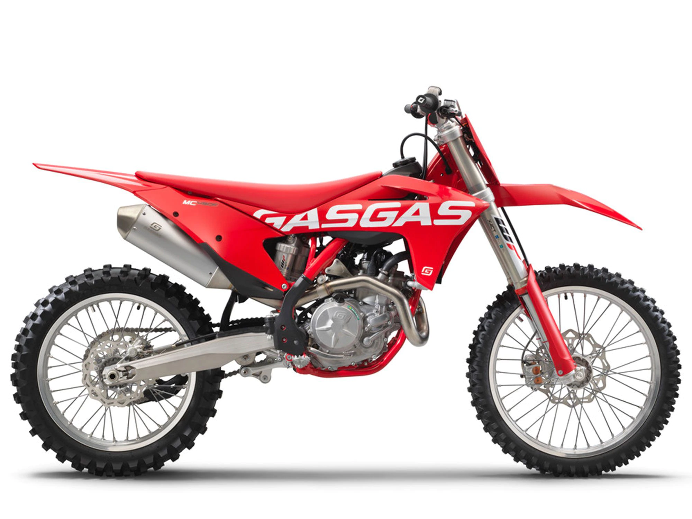

Pumping out serious performance, The MC 450F certainly favours the brave! But thanks to innovative technology and class-leading electronic wizardry, the MC 450F delivers its power to the dirt in a super controllable way. Designed with unrestrictive ergonomics and complete with WP Suspension for precise handling, it's a big bike that's super-easy to ride. Big power and monstrous amounts of torque from a compact SOHC motor that weighs just 27kg (59.5 lbs), including the electric starter! The MC 450F rips but thanks to centralization being key to the motor's design, the power unit is positioned more centrally within the frame, ensuring a positive effect on the bike's overall handling.
